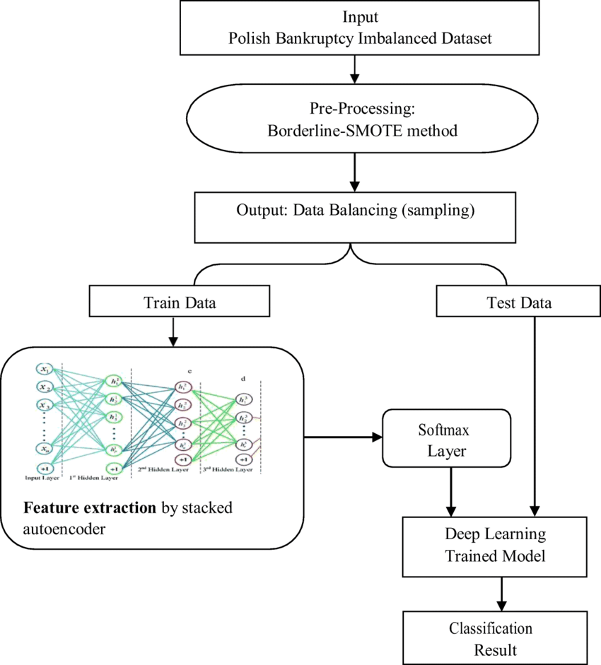
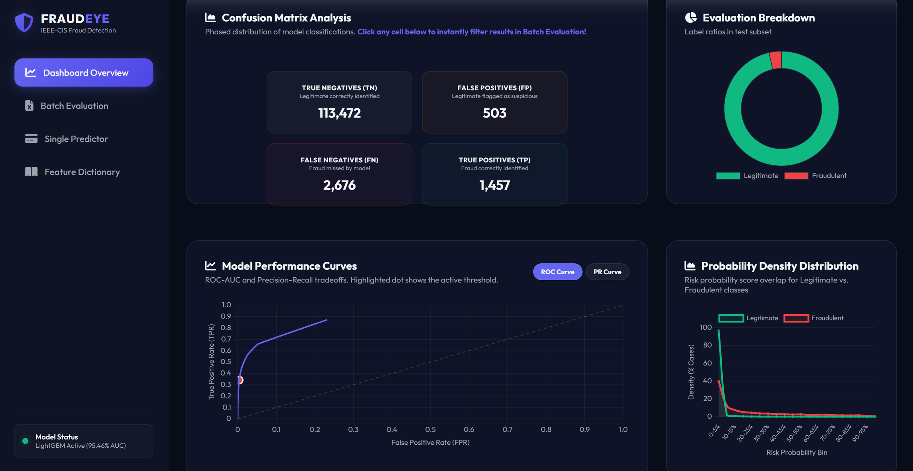
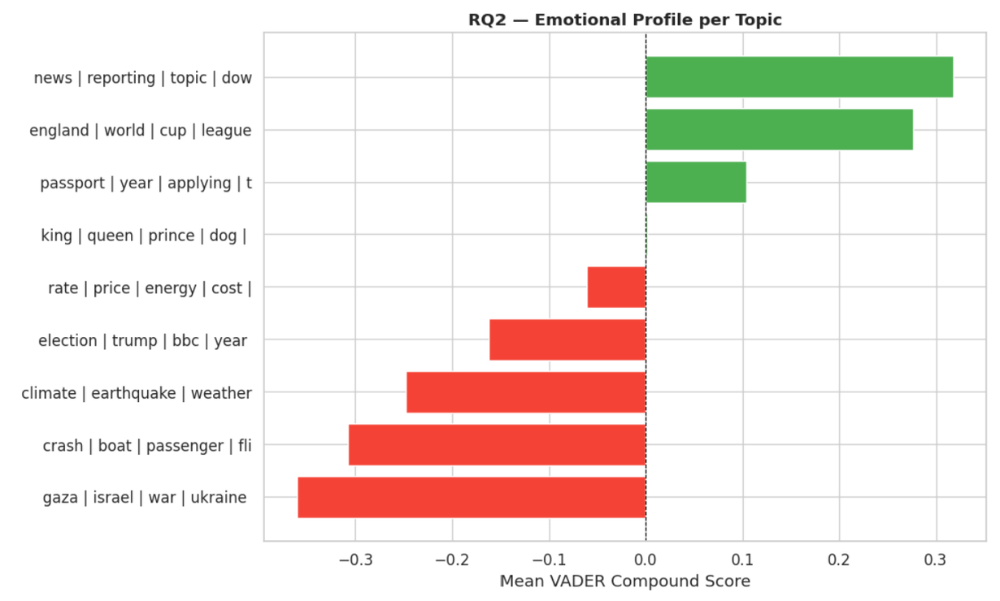

Native Proficiency / Mother Tongue
Master's Thesis integrating 12 financial baseline ratios with SEC Form 10-K textual risk disclosures (Items 1, 1A, 7) and Graph Neural Networks for cross-firm credit contagion.
Auditing machine learning pipelines for bias, data leakage, and regulatory adherence. Enhancing model transparency using post-hoc explainability methods like SHAP.
Applying BERTopic and Transformer embeddings to distill thematic discourse, sentiment drift, and communicative value from unstructured annual filings and media reports.
Comprehensive evaluation of access security, change management, database integrity, and automated internal control architectures in financial and commercial organizations.
Concentrating on Applied AI, Machine Learning, and Natural Language Processing. Master's Thesis: Multi-Modal Corporate Bankruptcy Prediction using SEC Form 10-K and Graph Neural Networks.
Planned and executed IT audit engagements across diverse corporate clients:
Led audit teams, conducted risk-based audit planning, and audited financial statements under VAS and IFRS across manufacturing, trading, energy, and education sectors.
Graduated with an overall GPA of 8.33 / 10. Solid grounding in international accounting standards, commercial statistics, and auditing methodologies.

Fusing 12 financial ratios with SEC Form 10-K disclosures & Graph Neural Networks for corporate default forecasting.
Learn More →
Real-time AI system trained on 118,000+ IEEE-CIS transactions with 97.25% ROC-AUC, Flask dashboard, and SHAP explainability.
Learn More →Real-time speech assistant integrating Whisper STT, fine-tuned RoBERTa emotion detector, and Google Gemini API.
Learn More →OpenCV feature matching (SIFT/ORB) with an automated fallback to Stable Diffusion outpainting when overlap fails.
Learn More →
Automated BERTopic modeling with MiniLM contextual embeddings, VADER sentiment profiling, and time-series analysis.
Learn More →Department of Information Management
Chang Gung University, Taoyuan, Taiwan